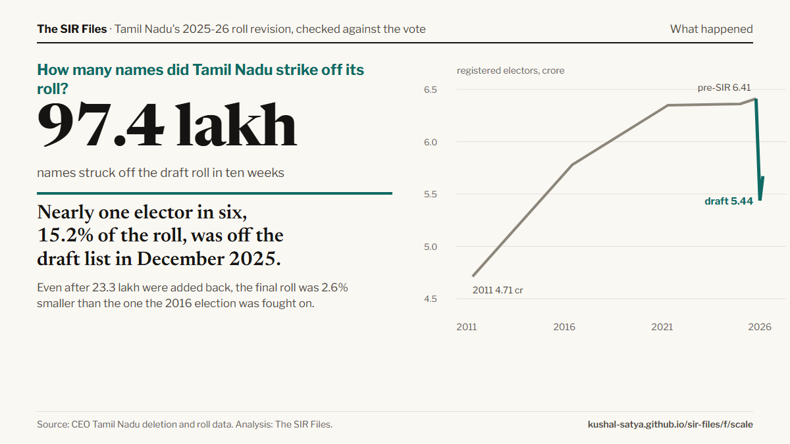

Twenty findings on Tamil Nadu's roll revision, each with the number, how sure we are of it, and a card you can send on WhatsApp. Three of them carry the story.
Built from the project's result files on 29 October 2026. Full paper: report · two-page brief.
The three that carry the story
How many names went, whether that could have cost Stalin his seat, and how many lost seats it could have decided.

What happened
How many names did Tamil Nadu strike off its roll?
Nearly one elector in six, 15.2% of the roll, was off the draft list in December 2025.
Even after 23.3 lakh were added back, the final roll was 2.6% smaller than the one the 2016 election was fought on.
97.4 lakh names; 23.3 lakh added back; final roll 11.6% below the pre-SIR roll
CEO Tamil Nadu AC-wise ASD, all 234 seats · n = 6.41 crore electors. Source: CEO Tamil Nadu deletion and roll data.
Kolathur gave the DMK 47% in 2026 and 75% in 2021.
So a reversal needs the deleted to have leaned far more DMK than 2026 voters. Not impossible; not shown.
DMK two-party share was 0.75 in 2021 (against AIADMK) and 0.47 in 2026 (against TVK): the lower end is below the first, every value above the second
bound p = 1/2(1 + M/(D v)) across six estimates of v. Source: ECI results; CEO Tamil Nadu deletion and roll data; six estimates of votes lost per name.
Within districts, deletion rates don't predict the DMK front's swing.
In 32 close calls, Kolathur among them, an effect that big can't be excluded.
applied to each seat's full shifted/absent rate, a reversing effect is excluded in 69 of 101 front-lost seats and not in 32, Kolathur among them. With a Chennai dummy instead of district FE: -0.23 [-0.37, -0.08]
234 seats, district FE, 2021 share, census · n = 234. Source: ECI results; CEO Tamil Nadu deletion and roll data.
Grouped by the question they answer. Where a finding has an interval, the bar shows it against zero: if the bar crosses the line, the data cannot tell the effect from none.
What happened
Who got struck off?
3.6×
more 'shifted or absent' deletions in the most urban seats than the most rural
The dead were cut evenly everywhere. The 'absent' were concentrated in the cities.
Deaths are about 4% of every roll; shifted/absent rises from 5.7% (most rural fifth) to 20.5% (most urban)
seat-level variance decomposition · n = 234. Source: CEO Tamil Nadu deletion and roll data; Census 2011.
No. The old were cut hardest, mostly as dead; voters in their twenties lost 8%.
6.6% of 18-19 year-olds, 8.4% of those in their twenties, 42.6% of those 80+ (mostly as dead)
part-wise lists (India SIR Data Center, vetted) vs April 2026 age cohorts · n = 97.3 lakh deletions. Source: part-wise lists via India SIR Data Center (vetted); CEO Tamil Nadu age cohorts.
change in votes per deleted name, net of each seat's earlier trend
Seats that lost more names lost no more votes than they were already losing before 2021.
with period-specific size slopes -0.01 [-0.21, +0.19]; with all controls period-specific -0.06 [-0.25, +0.13]; benchmark if the deleted had voted: -0.73
stacked 2016-21 vs 2021-26 vote change, seat and district-period FE · n = 232. Source: ECI results; TCPD; CEO Tamil Nadu deletion and roll data.
votes per deleted name per booth (range −0.19 to +0.06)
Maybe a little, maybe none: far short of the 0.65 you'd expect if the deleted had been voting.
per-part rates -0.13 (wild p = 0.09); unsplit units -0.004; all units in counts +0.03; deletions and unit size correlate 0.995, so the count version is fragile; a within-ward gradient, not the seat-wide level
125 exact stable units, 2021-26 · n = 125. Source: part-wise lists via India SIR Data Center (vetted); Form 20.
Would Kolathur have swung less with a lighter cut?
0.2 pts
gap in swing between Kolathur (36% cut) and a statistical twin (30% cut)
A twin built from comparable seats, cut less deeply, swung almost exactly the same.
twin cut 29.8% vs Kolathur 35.7%; swing gap -0.21 pp (-384 votes). Underpowered: placebo gaps have SD 4.8 pp against a decisive effect of 2.4 to 4.8 pp; pre-period fit worse than 89% of seats
synthetic control on pre-SIR traits, placebo-in-space · n = 234. Source: ECI results; CEO Tamil Nadu deletion and roll data; Census 2011.
Did the DMK front's vote fall where names were cut?
+0.05
DMK-front votes per deleted name
No. The front's own vote did not fall where more names were cut.
front +0.05 (SE 0.08); admk +0.32 (SE 0.27); tvk -0.22 (SE 0.13); other -0.35 (SE 0.25); the front's share of any votes lost has an upper 95% bound of 0.56
234 seats, district FE · n = 234. Source: ECI results; CEO Tamil Nadu deletion and roll data.
of 101 seats the DMK front lost where a modest lean among the deleted would be enough
Only in a handful of razor-thin contests.
all seats, net of earlier trend: 2; same, size effect free to change: 5; same, all controls free to change: 6; all seats, raw change: 6; Kolathur booth units: 2; Kolathur single-booth units: 6
same bound across the six estimates · n = 101. Source: ECI results; CEO Tamil Nadu deletion and roll data.
The single number that decides whether deletions could have changed results. If the deleted had all been voters, each would have taken about 0.73 of a vote with them.
Votes lost per deleted name, by design
Estimate and 95 per cent interval; the dashed line is the loss if every deleted name had been a voter
Every design puts the loss well short of the 0.73 votes per name expected if the deleted had all been voters.
Sources: ECI results; TCPD; CEO Tamil Nadu deletion counts; part-wise lists via India SIR Data Center (Kolathur). Analysis: The SIR Files.
Every seat
All 234 constituencies. Sort by any column; search by name or district. "Lean needed" is the range of DMK share the lost votes would have needed to reverse a seat the front lost, across the estimates of votes lost per deletion; above 100 per cent means impossible.
234 seats
All 234 constituencies; use the column buttons to sort
Seat
District
Deleted %
Shifted/absent %
Dead %
Front swing
TVK %
Winner
Margin
Lean needed
Figures
Every chart in the paper. Click to enlarge.
All estimates
The full findings table, as in the paper's appendix.